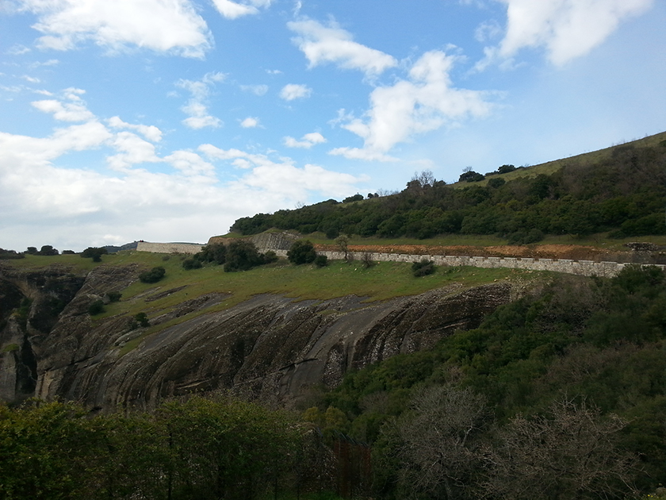
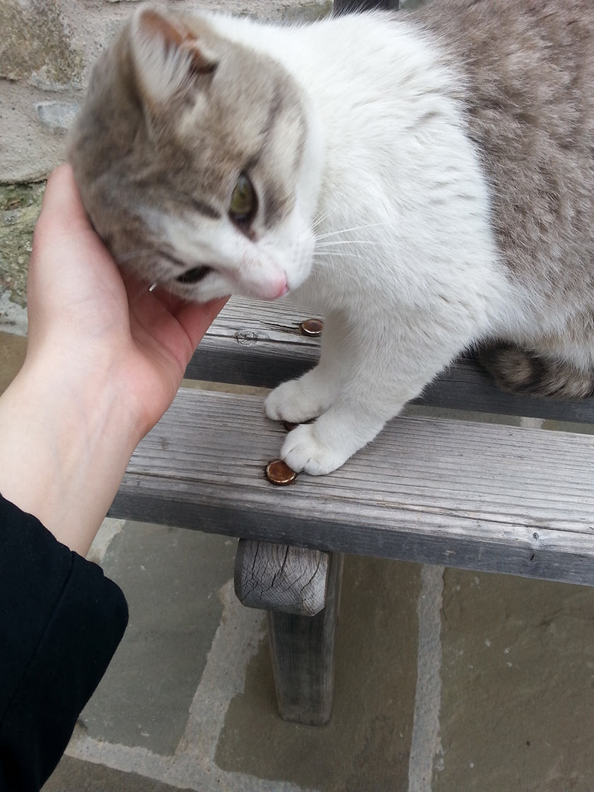
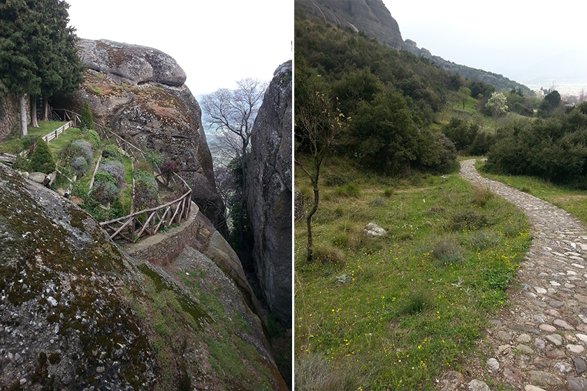
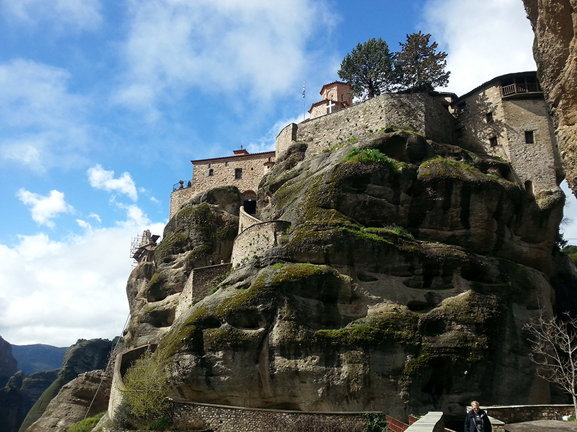
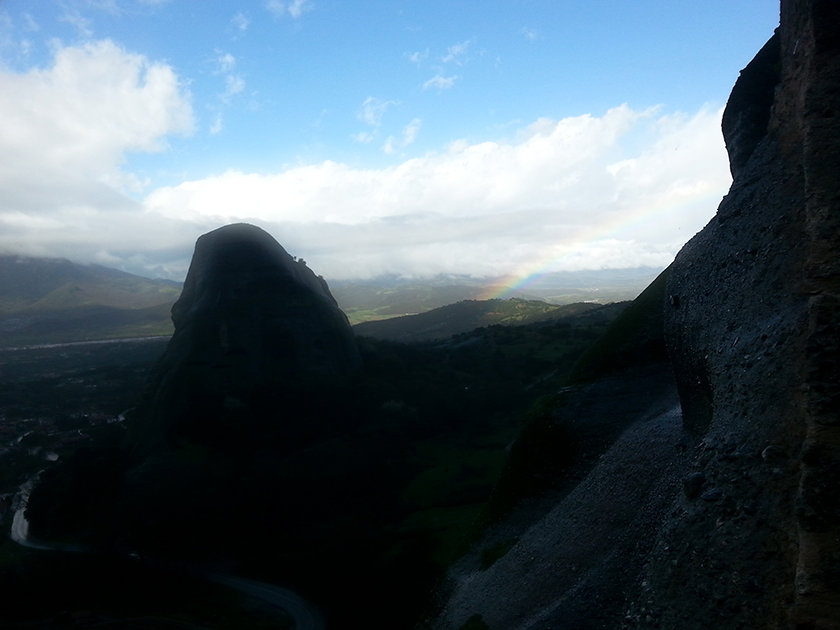

那時候我在德國實習，歐洲人的復活節總是盛大，總歸有著7~10天的假期不等。 「去希臘吧！」
順手點開網頁，開始把機票飯店訂妥，雅典衛城、聖托里尼，以及一個，我意料之外的地點，天空之城－卡蘭巴卡。
卡蘭巴卡，一個14世紀修士為了躲避伊斯蘭教宗教迫害所找到的淨土，一個位於距離雅典單程要5小時車程，一個被聯合國教科文組織訂為世界文化與自然雙遺產。
他叫做天空之城，是因為海拔高？在雲層裡？
就這樣，我在雅典住了一晚後，起了個大早，到火車站買了一天一趟的票，搭上了去往天空之城卡蘭巴卡的火車。這是一趟區間車，有點老老舊舊的，歐洲的火車差距可真大，熱門線多數是新列車，說不上富麗堂皇但也乾淨整齊光線極佳；這種冷門班次的區間車呢，真的只能努力熬，可五小時車程，真的挺難熬。我開始走往不同車廂晃，走到末節，遇上了一個中國人，就和他聊了起來；原來，他們是一群人復活節出來玩的，都在匈牙利布達佩斯上學，有的人念碩士，有的人攻博士，火車停靠後，他的朋友們也都一一出現在月台，我就一個女孩，和他們目的地相同，就交換了聯繫方式，總歸是異鄉人，一起有了照應。
由於民宿並不相同，我安頓好時，正好雨停，拿了張卡蘭巴卡的地圖後，我就出門探險了！是的，在這個網路發達的時代，我旅行喜歡看地圖，如果只是看著GPS，特別容易錯過許多特殊的小驚喜，噢不過，我是半個路痴，是的，我好像…迷路了。
望著前方的分叉路，看著地圖，徹底沒搞懂我到底要選左邊還是選右邊，這時候怎麼就沒有湖水女神出來告訴我讓我選哪邊？來了一輛藍色小廂型車，我就在馬路中間，把車攔了，「請問，你知道，Kastraki怎麼去嗎？」Kastraki是離民宿最近的修道院，因為也已經下午四點，我並沒有想著跑遠。被我攔下來的，是一個有著落腮鬍的中年大叔，他非常熱情地告訴我「你上車，我載你去！」
猶豫了三秒，我就走到他的副駕駛座，開門，上車，噢對了，我似乎忘了我是個女孩子了！等到車都啟動了，我才意識到我應該擔心一下？畢竟人生地不熟的？ 大叔熱情的和我說「我今天時間都給妳！妳要去哪我載妳去！都沒問題！」我和他說了我就在卡蘭巴卡待兩天，明天走，想說先去最近的修道院，殊不知大叔說：「我載你去最遠的那座修道院STAFANOU吧！你只待兩天，那座修道院明天不開！」攤開地圖，看著上面的告示確實寫著明天Day off，我就答應了大叔，讓他載我過去。
|  | ||
| 大叔載我所看到的沿途風景 |
真的是，非常熱情的希臘人呢，大叔告訴我他在當地經營民宿，歡迎我去玩，也趁著車程，沿路教我簡單的希臘文，謝謝＂Efkalisto＂，好漂亮”Orea”等等 （以上僅拼音，正確我也不會寫），到了修道院時，大叔告訴我，他進去也要收門票費用，讓我自己進去，他在外面等我。我當下真的…驚呆了！大叔一臉理所當然：「我說了今天的時間都給妳啊！沒事的我等你，去吧。」
然後我便獨自進入修道院，認識撸了兩隻貓貓，參觀完修道院出來發現，大叔真的還在等我，本來已經要回民宿了，大叔說，「順路，我再帶妳去另一邊吧，那裏有個小路，妳可以選擇自己走下去或我載妳下去。」基於不好意思讓大叔再等，我請他告訴我如何下山，我自己參觀後自己走下去。大叔指了一條山間小徑給我，這真的不是本地人根本不可能知道，肯定會走柏油路的！確定地點後，我和大叔告別，並且感謝大叔的幫忙。
我來到了第二座修道院，一進去，就看到一隻小貓坐在凳子上，看著我，我湊過去，貓咪竟然自己蹭過來了。修士走出來，看著貓咪自己親近我，能不能把貓咪帶回去養？因為這傢伙吃自己女兒的醋，老愛和女兒爭寵，然後吵架！我無奈地和修士說，我要搭飛機，沒辦法帶貓咪的，只好無奈地和貓咪告別。
|  | ||
| 蹭人小貓咪 |
參觀後，我獨自踏上那條山間小徑，真的是，小徑！標準的未經特意開發的，只是當地人走出來的路，我已經走了半小時，走到懷疑自己是不是能走出去這座山，整路杳無人煙，才看到一對情侶往上走，讓我倏的放下了心裡的大石頭，這條路，是能走通的！
|  | |
| 山間小路一景 | 山間小路一景-2 |
問題又來了，我在哪啊？沒有網路，我不知道自己在哪，不知道怎麼回民宿啊…無奈，開始物色路人問路，偏偏，這邊是生活區，多數人英語不通，我不死心地詢問一個拿著旅遊書的人，他是個西班牙人，也是剛到卡蘭巴卡，不過他非常熱心地拿著地圖幫我找路，帶著我走到了來時寬敞的大路，在我認得路後，便不耽誤他時間了，我自己走回去。
緊接著，下雨了，還是暴雨，多給我10分鐘阿老天，怎麼就要讓我當落湯雞呢…我的傘落在機場，只能狼狽地用外套帽子遮雨，但這是四月，溫度就10來度的四月，真夠冷的。無奈地嘆氣，加快了自己前進的步伐，希望能少淋點雨，走沒多久，一輛車在我面前停下，一個挺帥的男生搖下車窗，問我要去哪，雨下得挺大，需不需要幫忙，他可以載我一程。這可把我高興壞了，起先他還挺擔心無法戴我回民宿，因為他也算外地人，久久回來看望姐姐一次，不是太記得這邊的路；我和他說，往前開就好，就往前開，我的民宿不遠。於是，我成功地避免了成為落湯雞，頂多就…剛下水未開鍋而已。
第二天，我起了個大早，拎著一袋草莓，自己行動，由於大叔昨天載我的時候，也讓我對整個卡蘭巴卡有個大致的了解，這次我並不擔心迷路了。剛出發不久，一條大黃狗屁顛闢顛跟在我旁邊，估計是因為希臘的草莓又大又甜又香，把他引過來的吧，我和狗狗說，你不能吃草莓喔，狗狗並沒有離開，依然跟著我緩緩前行，行吧，沒人陪有狗陪也很好。
正當我要持續走柏油路上山時，狗狗改了個方向，他走到樹林裡，我認真一看，咦，這是一條小路呢，狗狗也不動，就是回頭看我，這次沒有猶豫，我就跟上他，這孩子帶我走的是山林小路，連人踩出來的痕跡都不明顯，滿是落葉，我也不知道會通往何方，但這孩子走走停停的等我，我也就沒多想，跟上去了。幾乎快要是垂直往上爬了，這路不好走，幾乎是六七十度的蜿蜒山路再往上爬，（卡蘭巴卡是抬升地形，非常陡峭）沿路走我沿路把羽絨外套脫了，圍巾拉下來，衣服拉鍊也往下拉了一點。終於，看到建築物了，狗狗最後再次回頭看我一眼，終於不再等我，竄不見了。
這是另一間修道院，碎石嶙峋的，矗立在陡峭的岩壁上。9~14世紀時，修士僅靠繩索，將大石搭到陡峭的岩壁上，蓋了修道院，他們堅信，神力會使他們的繩索不斷，讓他們得以成功建成修道院。我親眼看了他們的繩索器械，沒斷…真的是神蹟，繩索並非多粗的繩子，甚至沒有手腕粗，但扛上來的石塊極大，真心佩服當年這些心懷信仰的修士。
|  | ||
| 陡峭山壁上的修道院 |
走著晃著逛著，本來想著一天半能參觀一半修道院已經足夠了，殊不知意外獲得大叔以及狗狗的幫忙，節省我大量走路時間，我硬是參觀完了卡蘭巴卡僅剩的六座修道院。
總歸自然是溫柔的，狗狗的引領讓我相信了萬物皆有靈性，而手機實在拍不出這雨後我驚鴻一瞥，橫亙田野以及嶙峋大石的彩虹的美，這便作為我旅程的句點吧。
|  | ||
| 雨後彩虹 |